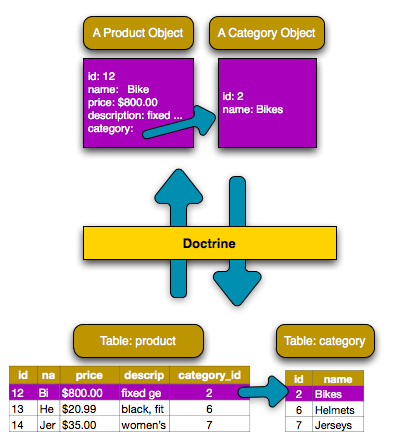
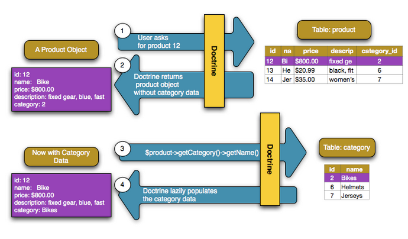

Hay dos tipos principales de relación/asociación:
ManyToOne / OneToMany
La relación más común, asignada en la base de datos con una columna de clave ajena simple (por ejemplo, una columna category_id en la tabla product). En realidad, este es solo un tipo de asociación, pero se ve desde los dos lados diferentes de la relación.
ManyToMany
Usa una tabla de unión y es necesaria cuando ambos lados de la relación tienen muchos del otro lado (por ejemplo, "estudiantes" y "clases": cada alumno está en muchas clases, y cada clase tiene muchos alumnos).
Primero, debes determinar qué relación usar. Si ambos lados de la relación contendrán muchos del otro lado (por ejemplo, "estudiantes" y "clases"), se necesita una relación ManyToMany. De lo contrario, es probable que necesite un ManyToOne.
tip
También hay una relación
OneToOne(por ejemplo, un usuario tiene un perfil y viceversa). En la práctica, usar esto es similar aManyToOne.
Supongamos que cada producto en tu aplicación pertenece exactamente a una categoría. En este caso, necesitarás una clase Category y una forma de relacionar un objeto Product con un objeto Category.
Comenzamos por crear una entidad de Category:
$ php bin/console make:entity CategoryLuego añadimos el campo name a la clase Category
x// src/Entity/Category.php// ...class Category{ /** * @ORM\Id * @ORM\GeneratedValue * @ORM\Column(type="integer") */ private $id; /** * @ORM\Column(type="string") */ private $name; // ... getters and setters}En este ejemplo, cada categoría se puede asociar con muchos productos. Pero, cada producto puede asociarse con una sola categoría. Esta relación se puede resumir como: muchos productos en una categoría (o, de manera equivalente, una categoría en muchos productos).
Desde la perspectiva de la entidad Producto, esta es una relación muchos a uno. Desde la perspectiva de la entidad Category, esta es una relación de uno a muchos.
Para mapear esto, primero creamos una propiedad category en la clase Product con la anotación ManyToOne:
xxxxxxxxxx// src/Entity/Product.php// ...class Product{ // ... /** * @ORM\ManyToOne(targetEntity="App\Entity\Category", inversedBy="products") * @ORM\JoinColumn(nullable=true) */ private $category; public function getCategory(): Category { return $this->category; } public function setCategory(Category $category) { $this->category = $category; }}En yaml
xxxxxxxxxx# src/Resources/config/doctrine/Product.orm.ymlApp\Entity\Product typeentity # ... manyToOne category targetEntityApp\Entity\Category inversedByproducts joinColumn nullabletrueEste mapeo de varios a uno es obligatorio. Le dice a Doctrine que use la columna category_id en la tabla Product para relacionar cada registro en esa tabla con un registro en la tabla Category.
A continuación, dado que un objeto Category se relacionará con muchos objetos Product, agrega una propiedad products a Category que contendrá esos objetos:
xxxxxxxxxx// src/Entity/Category.php// ...use Doctrine\Common\Collections\ArrayCollection;use Doctrine\Common\Collections\Collection;class Category{ // ... /** * @ORM\OneToMany(targetEntity="App\Entity\Product", mappedBy="category") */ private $products; public function __construct() { $this->products = new ArrayCollection(); } /** * @return Collection|Product[] */ public function getProducts() { return $this->products; }}En yaml
xxxxxxxxxx# src/Resources/config/doctrine/Category.orm.ymlApp\Entity\Category typeentity # ... oneToMany products targetEntityApp\Entity\Product mappedBycategory# Don't forget to initialize the collection in# the __construct() method of the entitySe requiere el mapeo de ManyToOne que se muestra anteriormente, pero este OneToMany es opcional: solo agrégalo si deseas poder acceder a los productos que están relacionados con una categoría. En este ejemplo, será útil poder llamar $category->getProducts(). Si no los quieres, tampoco necesitas las configuraciones invertedBy o mappedBy.
¿Para qué es este ArrayCollection?
El código dentro de
__construct()es importante: la propiedad$productsdebe ser un objeto de colección que implemente la interfaz deCollectiondeDoctrine. En este caso, se utiliza un objetoArrayCollection.
¡La base de datos está configurada! Ahora, ejecuta las migraciones como siempre:
xxxxxxxxxx$ php bin/console doctrine:migrations:diff$ php bin/console doctrine:migrations:migrateGracias a la relación, esto crea una columna de clave ajena category_id en la tabla products. ¡Doctrine está listo para persistir en nuestra relación!
¡Ahora puedes ver este nuevo código en acción! Imagina que estás dentro de un controlador:
xxxxxxxxxx// ...use App\Entity\Category;use App\Entity\Product;use Symfony\Component\HttpFoundation\Response;class ProductController extends Controller{ /** * @Route("/product", name="product") */ public function index() { $category = new Category(); $category->setName('Computer Peripherals'); $product = new Product(); $product->setName('Keyboard'); $product->setPrice(19.99); $product->setDescription('Ergonomic and stylish!'); // relate this product to the category $product->setCategory($category); $em = $this->getDoctrine()->getManager(); $em->persist($category); $em->persist($product); $em->flush(); return new Response( 'Saved new product with id: '.$product->getId() .' and new category with id: '.$category->getId() ); }}Cuando vayas a /product, se agrega una nueva filas tablas category y product. La columna product.category_id para el nuevo producto se configura con el id de la nueva categoría. Doctrine maneja la persistencia de esta relación para ti:

Si eres nuevo en un ORM, este es el concepto más difícil: debes dejar de pensar en tu base de datos y, en cambio, solo pensar en tus objetos. En lugar de establecer el id de la categoría en Product, configura todo el objeto Category. Doctrine se ocupa del resto al guardar.
Actualización de la relación desde el lado inverso
¿Podrías llamar también a
$category->setProducts()para establecer la relación? ¡En realidad no! Antes, no agregamos un métodosetProducts()enCategory. Eso es a propósito: solo puedes establecer los datos en el lado propietario de la relación. En otras palabras, si llamas$category->setProducts()solamente, eso se ignora por completo al guardar.
Cuando necesites buscar objetos asociados, el flujo de trabajo es igual que antes. Primero, busca un objeto $product y luego acceda a su objeto Category relacionado:
x
use App\Entity\Product;// ...public function showAction($id){ $product = $this->getDoctrine() ->getRepository(Product::class) ->find($id); // ... $categoryName = $product->getCategory()->getName(); // ...}En este ejemplo, primero consultas el objeto Product basado en el id del producto. Esto emite una consulta solo para los datos del producto y popula (hidrata) el $producto. Más tarde, cuando llamas a $product->getCategory()->getName(), Doctrine realiza silenciosamente una segunda consulta para encontrar la Category relacionada con este Product. Prepara el objeto $category y te lo devuelve.

Lo que es importante es el hecho de que tienes fácil acceso a la categoría relacionada con el producto, pero los datos de la categoría no se recuperan hasta que solicite la categoría (es decir, que está "cargada de forma diferida" - lazily loaded).
Debido a que mapeamos el lado opcional de OneToMany, también puedes consultar en la otra dirección:
xxxxxxxxxxpublic function showProductsAction($id){ $category = $this->getDoctrine() ->getRepository(Category::class) ->find($id); $products = $category->getProducts(); // ...}En este caso, ocurre lo mismo: primero consultas por un solo objeto Category. Luego, solo cuando (y si) accede a los productos, Doctrine realiza una segunda consulta para recuperar los objetos Product relacionados. Esta consulta adicional puede evitarse agregando JOINs.
Relaciones y clases Proxy
Esta "carga diferida" es posible porque, cuando es necesario,
Doctrinedevuelve un objeto "proxy" en lugar del objeto verdadero. Mira de nuevo el ejemplo:xxxxxxxxxx$product = $this->getDoctrine()->getRepository(Product::class)->find($id);$category = $product->getCategory();// prints "Proxies\AppEntityCategoryProxy"dump(get_class($category));die();Este objeto proxy extiende el verdadero objeto Category y se ve y actúa exactamente como este. La diferencia es que, al usar un objeto proxy,
Doctrinepuede demorar la consulta de los datos de categoría reales hasta que realmente los necesites (por ejemplo, hasta que llames a$category->getName()).Las clases proxy son generadas por
Doctriney almacenadas en el directorio de caché. Probablemente nunca notarás que tu objeto$categoryes en realidad un objeto proxy.En la siguiente sección, cuando recuperas los datos del producto y la categoría de una vez (a través de un
join),Doctrinedevolverá el verdadero objeto Category, ya que no es necesario cargar nada de forma diferida.
En los ejemplos anteriores, se realizaron dos consultas: una para el objeto original (por ejemplo, una Category) y otra para el (los) objeto (s) relacionado (s), por ejemplo, los objetos Product.
tip
Recuerda que puedes ver todas las consultas realizadas durante una solicitud a través de la barra de herramientas de depuración web.
Por supuesto, si sabes de antemano que necesitarás acceder a ambos objetos, puedes evitar la segunda consulta al emitir un join en la consulta original. Agrega el siguiente método a la clase ProductRepository:
xxxxxxxxxx// src/Repository/ProductRepository.phppublic function findOneByIdJoinedToCategory($productId){ return $this->createQueryBuilder('p') // p.category refers to the "category" property on product ->innerJoin('p.category', 'c') // selects all the category data to avoid the query ->addSelect('c') ->andWhere('p.id = :id') ->setParameter('id', $productId) ->getQuery() ->getOneOrNullResult();}Esto aún devolverá una matriz de objetos Product. Pero ahora, cuando llamas $product->getCategory() y utilizas esa información, no se realiza una segunda consulta.
Ahora, puede usar este método en tu controlador para consultar un objeto Product y su Category relacionada con solo una consulta:
xxxxxxxxxxpublic function showAction($id){ $product = $this->getDoctrine() ->getRepository(Product::class) ->findOneByIdJoinedToCategory($id); $category = $product->getCategory(); // ...}Hasta ahora, has actualizado la relación llamando a $product-> setCategory($category). Esto no es accidental: debes establecer la relación en el lado propietario. El lado propietario siempre está donde se establece el mapeo ManyToOne (para una relación ManyToMany, puedes elegir qué lado es el que posee).
¿Significa esto que no es posible llamar $category->setProducts()? En realidad, es posible, al escribir métodos más inteligentes. Primero, en lugar de un método setProducts(), crea un método addProduct():
xxxxxxxxxx// src/Entity/Category.php// ...class Category{ // ... public function addProduct(Product $product) { if ($this->products->contains($product)) { return; } $this->products[] = $product; // set the *owning* side! $product->setCategory($this); }}¡Eso es todo! La clave es $product->setCategory($this), que establece el lado propietario. Ahora, cuando guardes, la relación se actualizará en la base de datos.
¿Y para eliminar un producto de una categoría? Agrega un método removeProduct():
xxxxxxxxxx// src/Entity/Category.php// ...class Category{ // ... public function removeProduct(Product $product) { $this->products->removeElement($product); // set the owning side to null $product->setCategory(null); }}Para que esto funcione, ahora debes permitir que se pase null a Product::setCategory():
xxxxxxxxxx// src/Entity/Product.php// ...class Product{ // ...- public function getCategory(): Category+ public function getCategory(): ?Category // ...- public function setCategory(Category $category)+ public function setCategory(Category $category = null) { $this->category = $category; }}¡Y eso es todo! Ahora, si llamas $category->removeProduct($product), el category_id de ese producto se establecerá como nulo en la base de datos.
Pero, en lugar de establecer category_id en null, ¿qué pasa si deseas que el producto se elimine si se convierte en "huérfano" (es decir, sin una categoría)? Para elegir este comportamiento, usa la opción orphanRemoval dentro de Category:
xxxxxxxxxx// src/Entity/Category.php// .../** * @ORM\OneToMany(targetEntity="App\Entity\Product", mappedBy="category", orphanRemoval=true) */private $products;Gracias a esto, si el Product se elimina de la Category, se eliminará por completo de la base de datos.
En la entidad Category podemos tener una clave ajena que se referencie a sí misma para resolver el caso en que una categoría tiene a su vez categorías hijas. A esta relación se le denomina auto-referenciada (self-referencing). Para crear este tipo de relación se debe crean las relaciones padre-hijos:
xxxxxxxxxx//src/Entity/Category.php/** //.... * One Category has Many Categories. * @ORM\OneToMany(targetEntity="Category", mappedBy="parent") */ private $children; /** * Many Categories have One Category. * @ORM\ManyToOne(targetEntity="Category", inversedBy="children") * @ORM\JoinColumn(name="parent_id", referencedColumnName="id") */ private $parent; public function __construct() { $this->products = new ArrayCollection(); $this->children = new ArrayCollection(); } //Devolver las categorías hijas public function getChildren() { return $this->children; } // ...Esto producirá el siguiente esquema MySql:
xxxxxxxxxxCREATE TABLE Category ( id INT AUTO_INCREMENT NOT NULL, parent_id INT DEFAULT NULL, PRIMARY KEY(id)) ENGINE = InnoDB;ALTER TABLE Category ADD FOREIGN KEY (parent_id) REFERENCES Category(id);Para obtener las hijas de un categoría, usamos el siguiente código:
xxxxxxxxxx<?php//src/Controller/CategoryController.phpnamespace App\Controller;use Sensio\Bundle\FrameworkExtraBundle\Configuration\Route;use Symfony\Bundle\FrameworkBundle\Controller\Controller;use Symfony\Component\HttpFoundation\Response;use App\Entity\Category;class CategoryController extends Controller{ /** * @Route("/category/{id}", name="category") */ public function index($id) { $em = $this->getDoctrine()->getManager(); $category = $em->getRepository(Category::class)->find($id); if (!$category) { throw $this->createNotFoundException( 'No product found for id '.$id ); } dump($category->getChildren()); dump(get_class($category->getChildren())); foreach ($category->getChildren() as $valor){ dump($valor); } die(); }}
Más información en Doctrine.
Esta sección ha sido una introducción a un tipo común de relación de entidad, la relación de uno a muchos. Para obtener detalles más avanzados y ejemplos de cómo usar otros tipos de relaciones (por ejemplo, uno a uno, muchos a muchos), consulta la
documentación Association Mapping Documentation de Doctrine
Nota
Si usas anotaciones, deberás anteponer todas las anotaciones con
@ORM\(por ejemplo,@ORM\OneToMany), que no se refleja en la documentación deDoctrine.